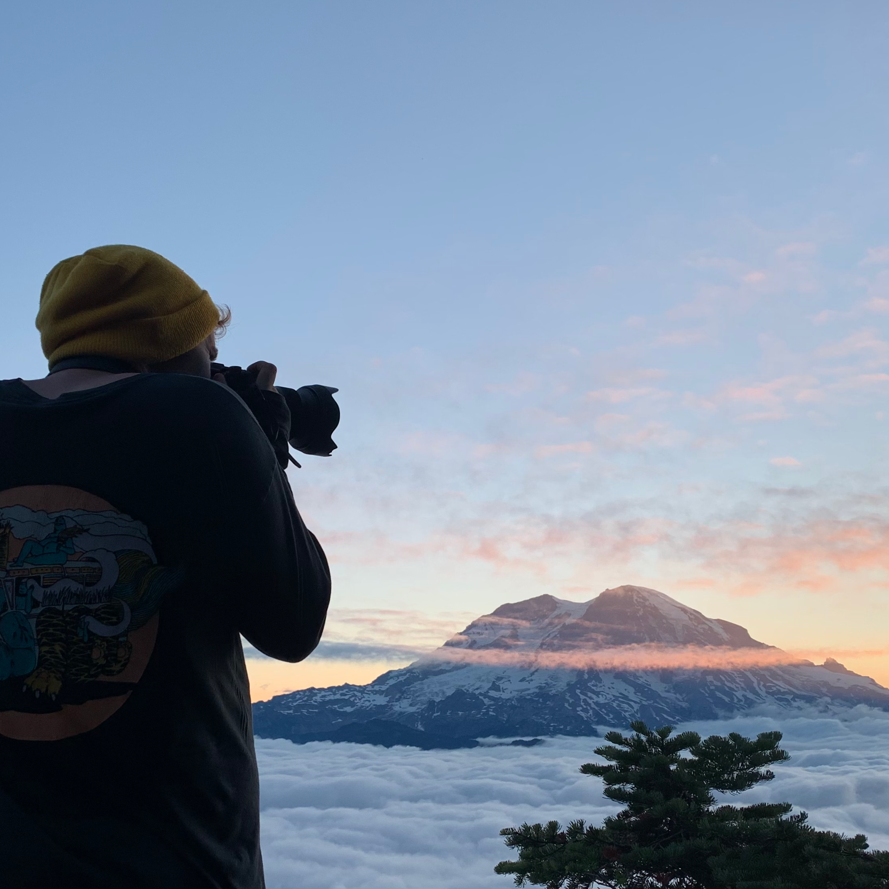

About me
Greetings! Welcome to my web resume. My name is Alexander and I'm a front end
engineer from the pacific northwest. Ive been in the industry for a little over 4 years.
This ended up being one of the best decisions Ive made, Im passionate about creating delightful user experiences and bringing quality designs to life!
On the side I do some freelancing, specializing in using React to create custom static jamstack sites with tools like Shopify.
Outside of work I love hiking and photography, two things that pair pretty well together.

React
CSS | SCSS
Next.js
Shopify Storefront Api
Technology I have some experience with:
Vue.js
GraphQl
Gatsby.js
Redux
CSS Modules
Technology I'm excited about trying:
Remix
Tailwind
Styled Components